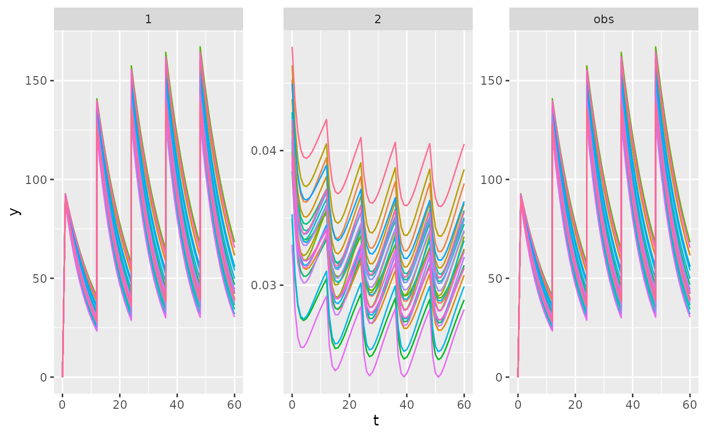

Below is an example of a simple indirect-response model. With PK-PD
models, the initial state of the PD system often depends on specific
model parts. We can define the state of the ODE system statically using
the A_init= argument, but this will not take any parameters
into account. However, we can also define initial states dynamically
using the state_init argument, which allow you to specify
the state of each compartment using code.
library("PKPDsim")
library("ggplot2")
p_pkpd <- list(
CL = 5,
V = 50,
KIN = .02,
KOUT=.5,
EFF = 0.2
)
r1 <- new_regimen(
amt = 100,
interval = 12,
n = 5
)
pkpd <- new_ode_model(
code = "
dAdt[1] = -(CL/V) * A[1];
conc = A[1]/V;
dAdt[2] = KIN * 1/(1+EFF*conc) - KOUT*A[2];
",
state_init = "A[2] = KIN/KOUT;"
)
dat <- sim(
ode = pkpd,
n_ind = 25,
omega = cv_to_omega(
par_cv = list(CL = 0.1, V = 0.1, KIN = .05, KOUT = 0.1),
p_pkpd
),
parameters = p_pkpd,
regimen = r1,
verbose = FALSE
)
ggplot(dat, aes(x = t, y = y, colour = factor(id))) +
geom_line() +
scale_colour_discrete(guide = "none") +
facet_wrap(~comp, scales = "free")
Combine PK and PD models
As shown above, a PK-PD model can be written as a single set of
differential equations. However, we often develop PK and PD models
separately and e.g. want to plug various PK models into existing PD
models. In PKPDsim you can two or more model parts
separately in a list to the code argument:
pkpd <- new_ode_model(
code = list(
pk = "dAdt[1] = -(CL/V) * A[1]; conc = A[1]/V; ",
pd = " dAdt[1] = KIN * 1/(1+EFF*conc) - KOUT*A[1]; "
),
state_init = list(pd = "A[1] = KIN/KOUT;")
)The above two systems of ODEs will then be combined into a single one.